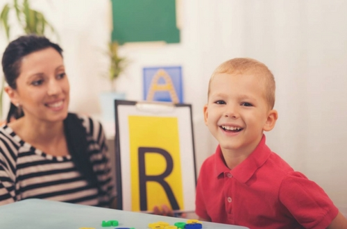

05/09/2020
Autismo en el cuerpo humano y sociedad
Los trastornos del espectro autista (TEA) se encuadran dentro de los trastornos del neurodesarrollo y se caracterizan por las alteraciones relacionadas con la comunicación y la interacción social, así como por presentar intereses fijos y conductas repetitivas. Hace unos años se diferenciaban distintos tipos de autismo, pero ahora se tiende a considerarlos en su conjunto y distinguirlos en función de su gravedad y de las habilidades a las que afectan.
Prevalencia
No existen cifras oficiales de prevalencia de los TEA en España, pero se estima que podrían llegar a afectar a 450.000 personas. Hay muchos más niños y hombres que niñas con TEA. Podría deberse a que la enfermedad afecta más al sexo masculino que al femenino, pero cada vez parece más claro que ha habido un alto infradiagnóstico en las mujeres.
Causas
"En la actualidad no es posible determinar una causa única que explique la aparición del Trastorno del Espectro del Autismo (TEA), pero sí la fuerte implicación genética en su origen", según explican desde la Confederación Autismo España. "La gran variabilidad presente en este tipo de trastornos apunta también a la relevancia que puede tener la interacción entre los distintos genes y diferentes factores ambientales en el desarrollo del TEA, pero por el momento, estos elementos no se encuentran claramente identificados, y aún es necesaria mucha investigación al respecto".
Síntomas
En los trastornos generalizados del desarrollo, como los TEA, se suele producir una amplia alteración de diversas funciones. De forma muy resumida, se podrían destacar los siguientes síntomas:
Movimientos corporales estereotipados.
Anomalías en la emisión, forma y contenido del lenguaje.
Anomalías en la emisión, forma y contenido del lenguaje.
Insistencia irracional en el seguimiento de rutinas.
Intereses o actividades restringidos.
Déficits en la reciprocidad social o emocional
Tratamientos
No hay cura para el TEA; acompaña al individuo a lo largo de toda su vida. Las terapias e intervenciones conductuales están diseñadas para minimizar los síntomas específicos y pueden aportar una mejoría sustancial de la calidad de vida. El plan de tratamiento ideal coordina las terapias e intervenciones que cubren las necesidades específicas de los niños a nivel individual. El tipo de intervención más efectiva es la psicoeducativa, proporcionada por psiquiatras, psicólogos, pedagotos, logopedas...
El tratamiento precoz mejora significativamente los síntomas en muchos casos y es esencial para que los niños desarrollen habilidades sociales y adapten su comportamiento. De hecho, un diagnóstico tardío está relacionado con la aparición de problemas asociados como trastornos de la alimentación, ansiedad o depresión.

Adrian S
“Nuestro viaje personal hacia el mundo del autismo comenzó hace poco más de ocho años, con el nacimiento de nuestro hijo Perry. Desde el comienzo, presentó grandes dificultades.

Perfecto Ladrón Honrado
lo que no me gusta de lo que esta sucediendo es como lo hace exactamente la cosa que sucedio el dia que paso a lo realmente sucedido literalmente lo que esta pasando es que este comentario es de por gusto xd prosiga con su exposicion sñta stephany xdd.